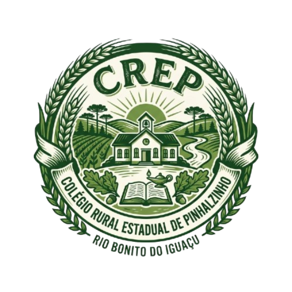

Meu segundo post
Por Kamily Moreira De Pieri
Aqui vou dar dicas de estudos para quem está se preparando para Enem e vestibulares
Este site vai trazer um pouco do dia a dia da escola!

Por Kamily Moreira De Pieri
O Colégio Rural Estadual de Pinhalzinho, fica em uma comunidade do interior da cidade de Rio Bonito do Iguaçu no Paraná. Entre os trabalos desenvolvidos, destaca-se os indices alcançados nos últimos anos com o IDEB, Prova Paraná e também a aprovação de aluno formados e diversos vestibulares do Estado.
Por Kamily Moreira De Pieri
Aqui vou dar dicas de estudos para quem está se preparando para Enem e vestibulares